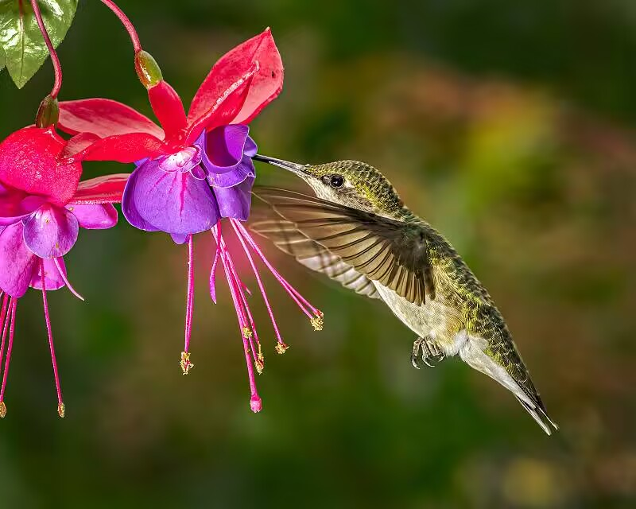
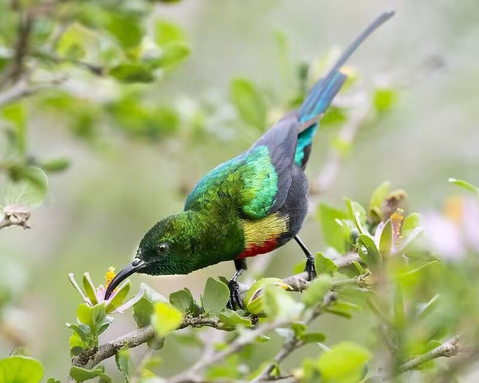
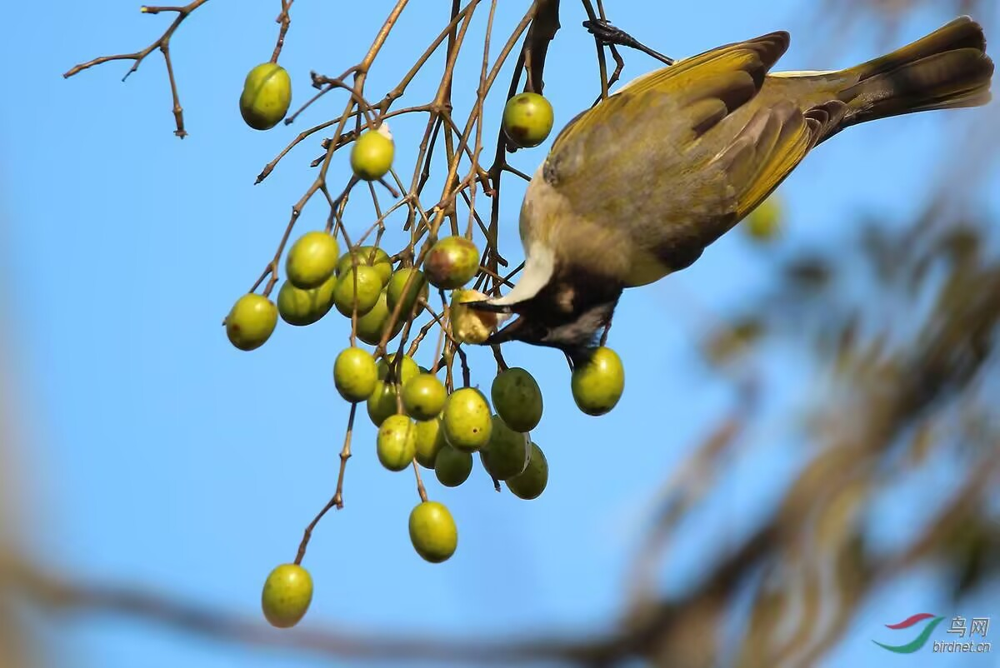

羽翼守望者


鸟类传粉是自然界中一类重要但常被低估的生态服务。全球约有1400种鸟类参与传粉，涉及近20000种开花植物。蜂鸟是美洲重要的传粉者，而太阳鸟在非洲和亚洲扮演着类似角色。研究表明，在同时被多种传粉者访问的植物中，鸟类的传粉有效性往往高于无脊椎动物。

鸟类传粉的丧失可能导致传粉失败、近交衰退加剧及植物密度下降。太阳鸟等鸟类传粉者在全球的适宜栖息地以东南亚及非洲中西部最为集中，其物种丰富度最高的区域为热带与亚热带湿润阔叶林生物群落。
📖 权威来源：点此处 查看《Why Birds Matter: Avian Ecological Function and Ecosystem Services》（University of Chicago Press, 2016）

鸟类传粉对维持植物遗传多样性、促进种群更新具有不可替代的作用。保护传粉鸟类及其栖息地，是维护整个生态系统服务功能的关键一环。